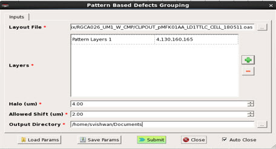

Performing Pattern Based Defects Grouping
In Wafer Defect review, you can group defects based on the similarity of patterns they land into the design. If multiple defects have similar patterns, they can be grouped together or classified as defects affected by similar patterns.
One use case is to find patterns that cause defects and determine how many defects are introduced by these types of patterns. If it is found to be a design problem, the issue can be corrected at design time.
Calibre DefectReview can find matches from eight different orientations as shown in following figure.
The patterns used to group pattern-based defects are picked from locations defined by the SystemX and SystemY coordinates in the Defect List.
Prerequisites
Set NXDAT_MGC_HOME to the path of your Calibre DefectReview installation.
Set MGC_HOME to the path of your Calibre installation.
Launch the Wafer Defect Management tool (as described in “Invoking the Wafer Defect Management GUI”). The Pattern Based Defects Grouping window is enabled only after opening a wafer defect file in the Calibre DefectReview main window.
Procedure
- To perform
pattern-based defects grouping, perform one of the following:
Click the Pattern Based Defects Grouping icon in the Calibre DefectReview toolbar.
Figure 2. Pattern Based Defect Grouping Icon
Select Utilities > Pattern Based Defect Grouping.
The Pattern Based Defects Grouping dialog box appears.
Figure 3. Pattern Based Defects Grouping Dialog Box
Results
The output and log files are created inside the directory specified in Output Directory of the Pattern Based Defects Grouping dialog box.
The results of the pattern match are displayed under the Pattern Classification Id column in the Defect List. A valid Id is a non-zero positive number. An Id of -1 represents a value where no pattern is found in order to run pattern matching. Defects with the same Pattern Classification Id are considered to have similar patterns in a defect location and region as defined by the SystemX, System Y and Halo regions.
Performing a Save or SaveAs saves the Pattern Classification Id value. This value is displayed when you reload the same inspection report.
The histogram view of the Pattern Classification Id can be analyzed inside the Repeatability Analysis window. The histogram is sorted on the Pattern Classification Id group count (the group having the greatest and least number of defects appear first and last, respectively). With the help of histograms, you can identify defects belonging to similar groups with greater ease. You can also highlight, filter-in, and filter-out defects of the same group in the Defect List, Defect Map, and Wafer Map by right-clicking on the histogram and selecting the corresponding option.